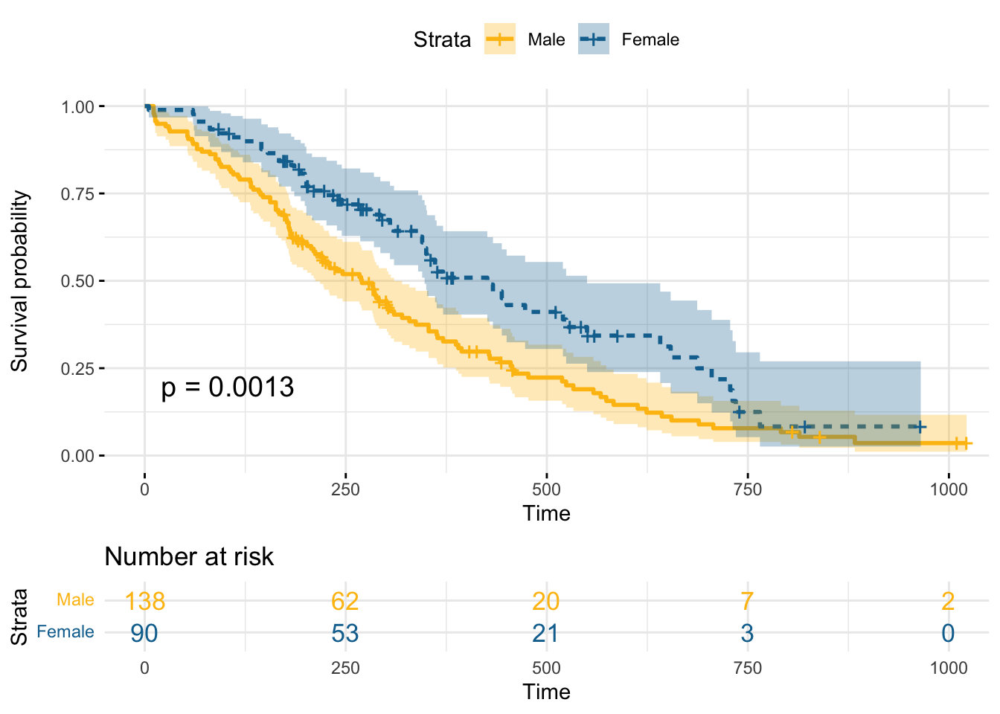

library(survminer)
require(survival)7 hazards
7.1 Setup
7.2 Data preparation
data("lung")
df <- survfit(Surv(time, status) ~ sex, data = lung)7.3 Data visualization
ggsurvplot(
df,
ggtheme = theme_minimal(),
linetype = "strata",
risk.table = TRUE,
risk.table.col = "strata",
conf.int = TRUE,
pval = TRUE,
palette = c("#fdbf11", "#12719e"),
legend.labs = c("Male", "Female")
)